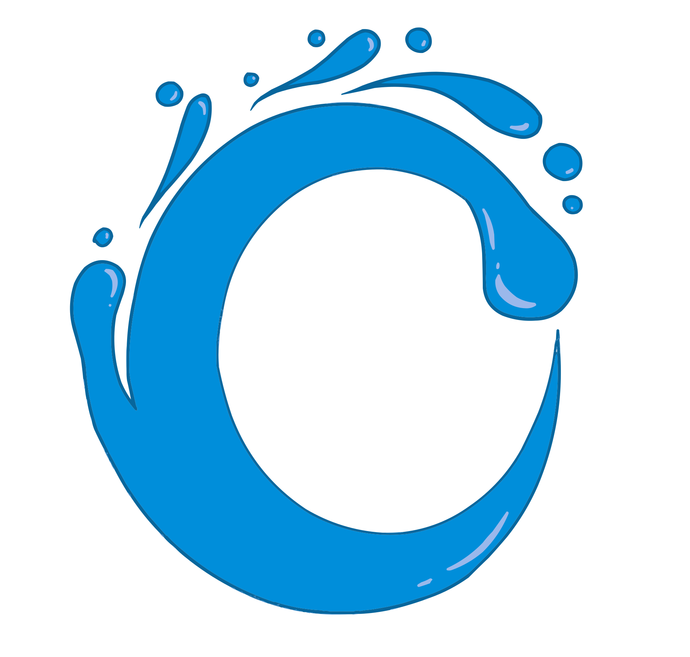
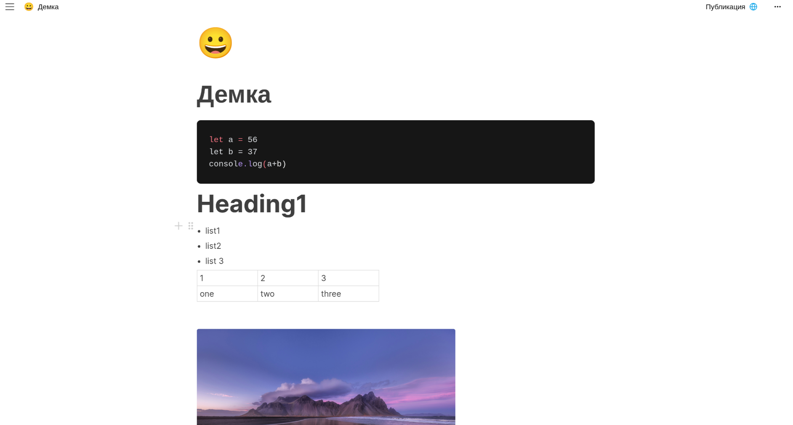
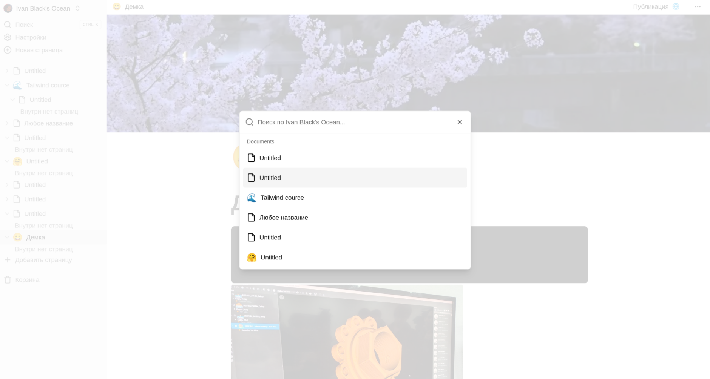

Контекст под рукой
Храни план, заметки и материалы проекта рядом. Вложенные страницы помогают видеть, как всё связано.


ceanOCEAN / ТВОЁ ЦИФРОВОЕ ПРОСТРАНСТВО
Собирай заметки, знания и личные проекты в Ocean. От первой мысли до готового документа — в одном пространстве.
Для учёбы, работы и собственных идей. Прямо в браузере.
Большая идея
начинается здесь
Личный проект / Заметки
План на сегодня☑ Сохранить первую мысль
☑ Собрать материалы
☐ Поделиться результатом
Пример наполнения страницы
01 / ЗАЧЕМ OCEAN
Конспект в одном файле, полезная ссылка в переписке, план проекта в другом приложении. Ocean помогает собрать материалы вокруг того, над чем ты работаешь.
Храни план, заметки и материалы проекта рядом. Вложенные страницы помогают видеть, как всё связано.
Начни с чистой страницы и добавляй нужные блоки: текст, списки, таблицы, изображения или код.
Опубликуй готовый документ по ссылке для просмотра или сохрани его в PDF.
Заметки, дерево страниц и публикация по ссылке в одном рабочем пространстве — от сбора материалов до готового результата.
02 / ВОЗМОЖНОСТИ
Инструменты, которые помогают записать, упорядочить и сохранить важное.
Сочетай заголовки, списки, таблицы и блоки кода на одной странице.
Разделяй большие темы на части и собирай собственную базу знаний.
Находи нужный документ по названию, когда записей становится больше.
Открывай готовые страницы для просмотра другим людям. Доступом управляешь ты.
Сохраняй документ отдельным файлом, чтобы отправить или использовать вне приложения.
Возвращай удалённые страницы из корзины, если они снова понадобились.
03 / ВНУТРИ OCEAN
Так выглядит текущая версия Ocean. Реальные скриншоты редактора и поиска по страницам.

Дерево документов держит структуру перед глазами, а поиск по названиям помогает быстро вернуться к нужной странице.
Посмотреть в приложении
04 / ДЛЯ КОГО
Одна рабочая среда для разных задач. Выбери, с чего начать.
Собирай конспекты по предметам, ссылки на источники и материалы для курсовой.
Семестр → Предмет → КонспектВеди технические заметки, сохраняй фрагменты кода и описывай решения для проекта.
Проект → Документация → РешениеХрани брифы и рабочие записи. Делись готовым описанием проекта по ссылке.
Проект → Бриф → Результат05 / ПЕРВЫЕ ШАГИ
Перейди в приложение и войди в аккаунт или зарегистрируйся.
Дай ей название, запиши идею и добавь нужные блоки.
Добавляй вложенные страницы. Готовым документом можно поделиться по ссылке или в PDF.
06 / ВОПРОСЫ
Несколько деталей о текущей версии продукта.
Ocean работает в браузере. Для работы с документами понадобится войти в аккаунт в приложении.
По умолчанию документы доступны владельцу аккаунта. Если опубликовать страницу, её смогут просматривать люди, у которых есть ссылка. Публикацию можно отменить.
В текущей версии есть личное пространство и публикация страниц для просмотра. Совместное редактирование пока не заявлено как доступная функция.
AI-помощник — часть концепции развития Ocean. В текущей версии, представленной здесь, доступны инструменты для заметок и документов; встроенного AI пока нет.
Для входа и работы с документами Ocean обращается к внешним сервисам Clerk и Convex. Если они недоступны в твоей сети, попробуй другое подключение или VPN.
НАЧНИ С ОДНОЙ ИДЕИ
Конспект, личный проект или мысль, которую важно сохранить.
Дай ей место в Ocean.
Переход в веб-приложение · Для создания страниц нужен аккаунт